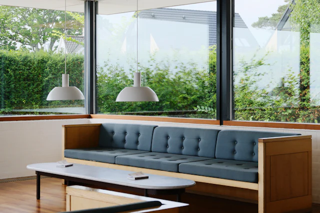

PVC langai
Norma [DEMO]
Kasdienis langas namui ir butui: šiltas profilis, paprasta priežiūra ir platus spalvų pasirinkimas.
Apie Norma sistemą
Trys sistemos iš skirtingų medžiagų. Visas gaminame pagal išmatuotas angas, su 2 arba 3 stiklų paketais ir jūsų pasirinkta spalva [DEMO].

PVC langai
Kasdienis langas namui ir butui: šiltas profilis, paprasta priežiūra ir platus spalvų pasirinkimas.

Mediniai langai
Klijuotos pušies langai mediniams, rąstiniams ir paveldo pastatams. Dengiami lazūra arba dažais.

Aliuminio langai
Ploni rėmai dideliems stiklams, stiklo sienoms ir slankiojamoms sistemoms.
Brėžiniuose trikampio smaigalys rodo vyrių pusę. Pasirinkite tipą – konfigūratorius atsidarys su juo.
Schemos supaprastintos ir nubraižytos ne mastelyje. Tikslius profilių pjūvius pateikiame pasiūlyme.
Vertinimai bendri, o matmenų ribos – šio konfigūratoriaus [DEMO]. Konkrečios sistemos šilumines savybes (Uw) nurodome pasiūlyme.
| Savybė | PVC | Mediena | Aliuminis |
|---|---|---|---|
| Kainos lygis | Mažiausias | Vidutinis–aukštas | Aukščiausias |
| Priežiūra | Nuvalyti, kartą per metus sutepti furnitūrą | Kas kelerius metus atnaujinti dangą lauko pusėje | Nuvalyti, kartą per metus sutepti furnitūrą |
| Rėmo plotis brėžinyje | Platesnis (68 mm) [DEMO] | Plačiausias (80 mm) [DEMO] | Siauriausias (52 mm) [DEMO] |
| Didžiausias langas | 3000 × 2600 mm | 2800 × 2600 mm | 4500 × 3000 mm |
| Slankiojama sistema | Galima | Konfigūratoriuje nesiūlome | Galima, ir didelių matmenų |
| Spalvos | Balta arba laminuota plėvelė | Lazūra arba dengiantys dažai | Bet kuri RAL spalva, miltelinis dažymas |
| Kada rinktis | Kai svarbiausia kaina ir paprasta priežiūra | Mediniams, rąstiniams ir paveldo pastatams | Stiklo sienoms, terasos ir balkono durims |
| Veiksmas | Konfigūruoti iš PVC | Konfigūruoti iš medienos | Konfigūruoti iš aliuminio |